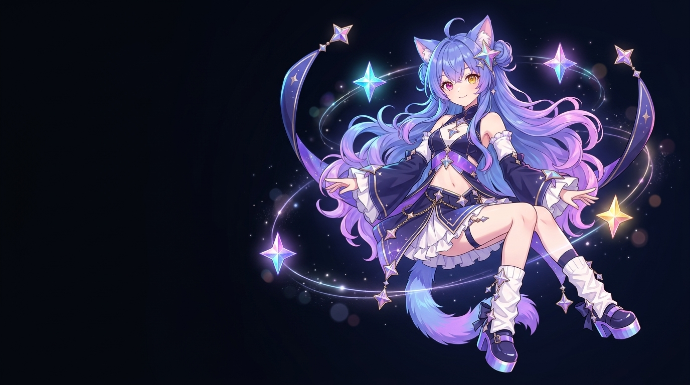
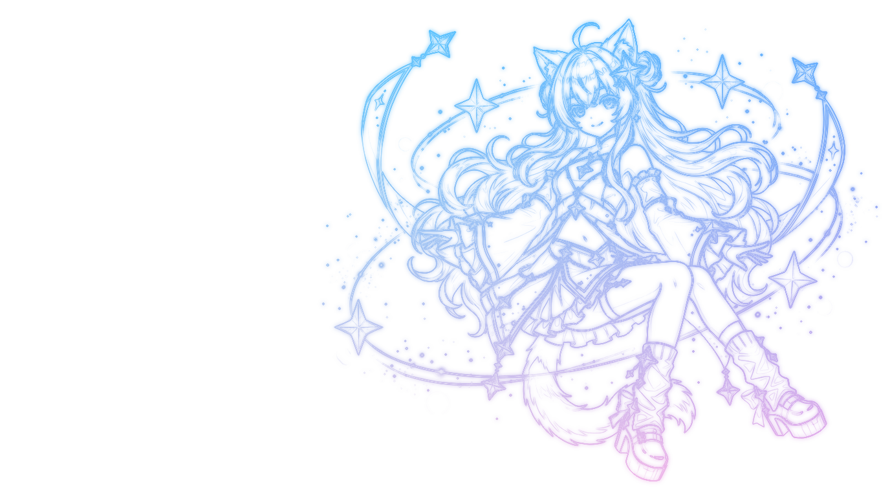
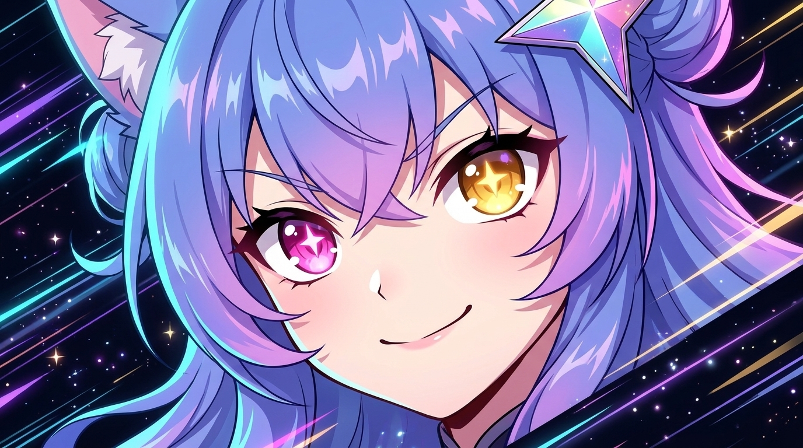
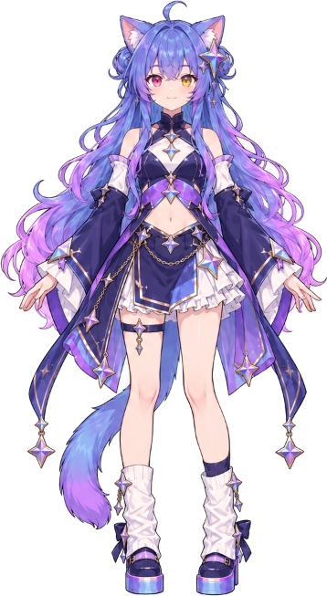
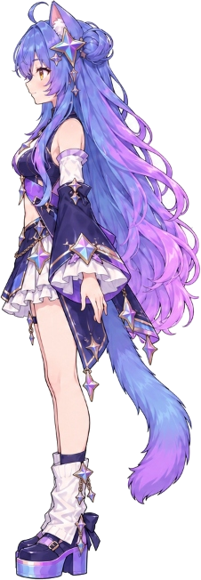
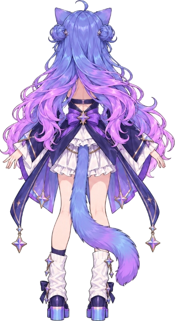

GEMINI NEKO // AWAKENING
异色瞳星轨觉醒
GOOGLE ANTIGRAVITY · LIVE NEKO CORE
GEMINI NEKO PROTOCOL · ZERO-G WORKSPACE
星轨共鸣完成，欢迎回到反重力空间

FRONT

SIDE

BACK
01 // 星核点火 · 反重力力场展开...
12%
LIVE2D RIG: ACTIVE · -9.81 m/s²
BOOTING CORE...
WINDOW LOCKED · HANDOFF
CLICK / ESC 立即衔接界面
重播 Gemini 娘开场动画